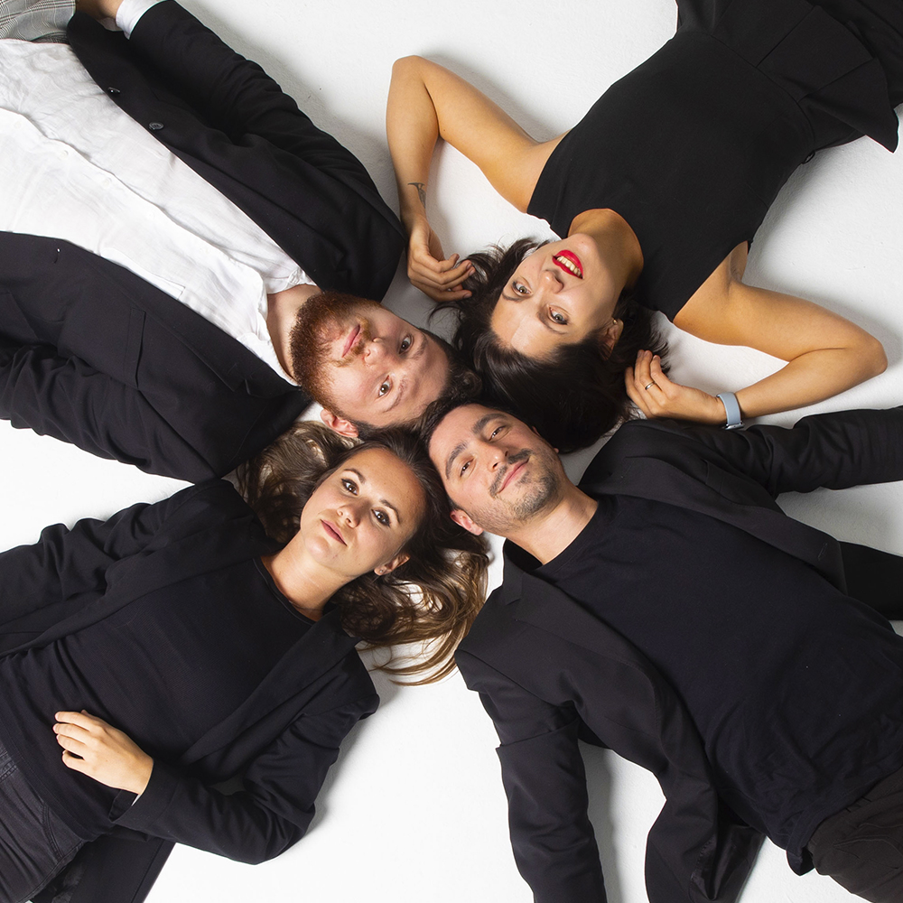
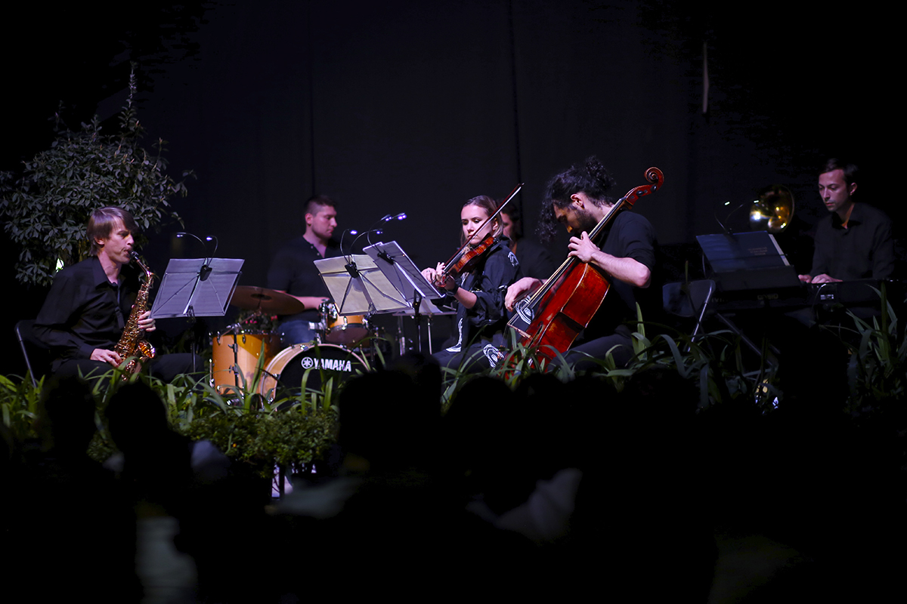
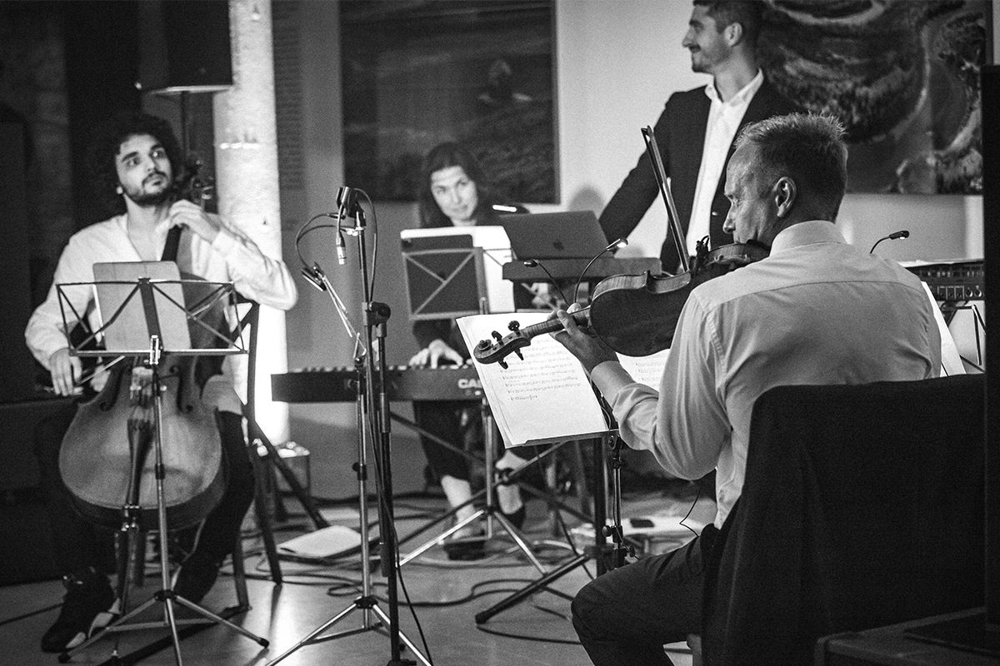

Единственный в своем роде ансамбль камерной музыки в Москве, созданный в 2018 году, его неистовым и излучающим неподдельную творческую энергию лидером – Григорием Волковым.
За первый год работы ансамблем было сыграно более 50 концертов в России и Европе. Музыканты, входящие в состав Simple Music Ensemble, работают в известных огромному числу поклонников академической музыки коллективах. Таких как оркестр Теодора Курентзиса musicAeterna, Большой театр, Центральный военный оркестр, Государственная академическая симфоническая капелла, Мариинский театр и в самых разных европейских оркестрах.
Коллектив профессиональных музыкантов, которых вдохновляет идея исполнять любимую музыку на нестандартных площадках. Репертуар Simple Music Ensemble — выдающиеся произведения разных эпох, экспериментальная музыка и прочувствованная музыка из кинокартин в авторских аранжировках.
